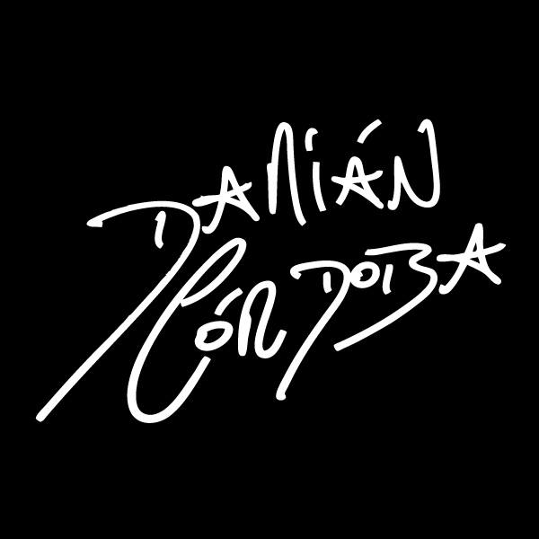

Damián nació el 17 de abril de 1987 en la ciudad de Catamarca, hijo de Héctor Córdoba (Coco) y Elba Reynoso; a la influencia de su bisabuelo (que era cantor y músico) Damian le sumó todo su talento. Fue pasando el tiempo entre actos de la escuela y reuniones familiares, lo que era un juego se convirtió en su vocación. Su carrera comienza en la adolescencia, con un casting donde queda seleccionado para “Los Bingos”; en el año 2001, Walter Olmos lo elige como cantante soporte y lo presenta en el Luna Park. A partir de esa noche Damián comienza la gira con Walter Olmos por todo el país. Después de dos años comienza su propio camino. Un año más tarde graba su primer CD “Como una puñalada” (incluye el tema “Lustra botas” como homenaje a su amigo Walter Olmos), y lo presenta en la “Plaza del Indio” en Catamarca ante una multitud de seguidores.
Actualmente vive en la ciudad de Córdoba y aquí es donde generalmente presenta sus nuevos discos. Su último disco se titula Imbatible" que salió de forma digital el 23 de septiembre y a la venta el 27 del año 2016 y fue presentado el 9 de octubre en La Plaza de la Música donde hubo un lleno total. El disco trae 14 temas con versiones y temas propios. Participó en la muestra de pinturas, objetos y fotografías 'Cultura Cuarteto, la muestra se realizó en el Paseo del Buen Pastor en Córdoba Capital... Damián Córdoba con tan solo 31 años, es uno de los artistas más populares de la música de Córdoba, lleva grabados 25 discos en vivo y en estudio, de los cuales 24 son discos de oro, cantó en el Gran Rex, hará una gira por Chile, Uruguay, Paraguay, Bolivia, México y Colombia y también lleva grabados 3 DVD.[cita requerida].